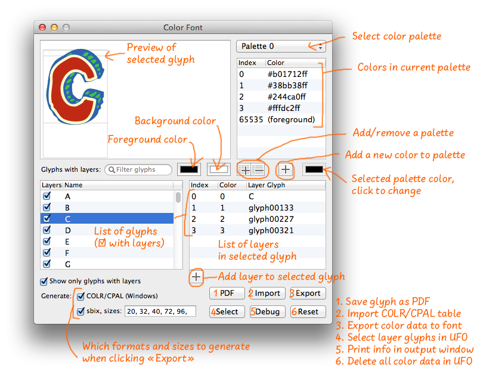

The list on the left-hand side displays all glyphs in the current font. Use the check box below to show only glyphs which have layers.
Select a glyph in the list to display its layers in the list on the right-hand side.
Double-click any entry in one of the lists to open its glyph in the current glyph window.